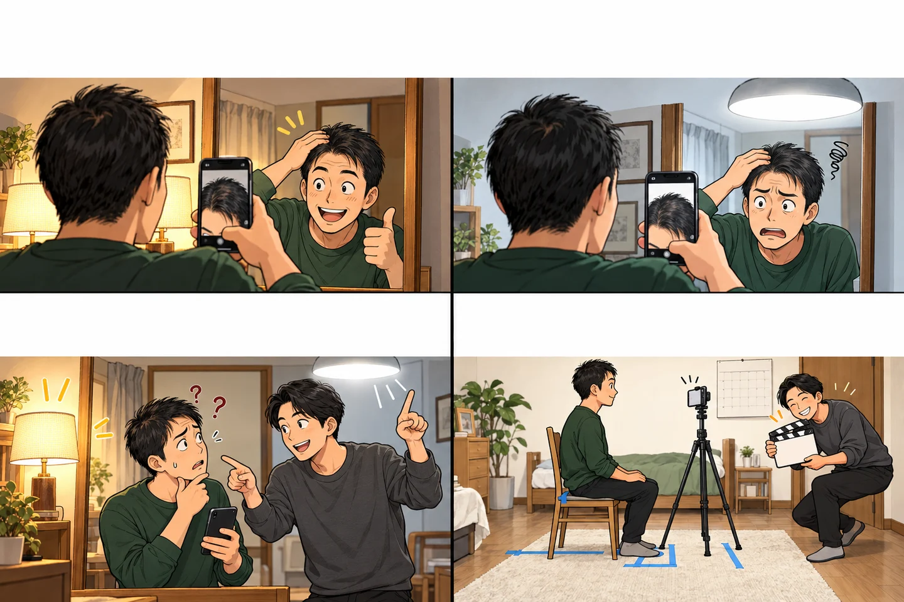

写真で気づいた不安は、記録に変える
先に要点
- 写真は照明や角度をそろえて記録しましょう。
- 写真の見え方だけで進行や治療効果を判断せず、診察で確認してください。
昨日と違う。……照明が？

ユウお、昨日よりいい感じに見えない？
ユウあれ？こっちだと、ちょっと気になるな……。
ナオそれ、髪じゃなくて照明が変わったんじゃない？
ナオちゃんと撮るのはいいけど、映画が始まりそうだね。
比べたいのは髪。照明の勝負ではありません。
窓際と洗面所、乾いた髪と濡れた髪では、見え方が変わります。条件をそろえるのは変化を自己診断するためではなく、医師に「いつから、どこが気になるか」を伝えやすくするためです。
研究でも、写真の印象と毛髪密度は分けて評価
ミノキシジルの比較試験では、毛髪密度と写真の評価が別々に調べられ、項目によって結果の読み方が異なりました。写真で良さそうに見えることと、測定した結果は同じ意味ではありません。
Penha et al. JAMA Dermatology (2024)：主要評価項目と写真評価。
次の記録は、いつもの場所で
- 撮影した日、場所、髪が乾いているかをメモする。
- できる範囲で、光・角度・距離をそろえる。
- 写真と一緒に、抜け毛や頭皮など気になる変化を言葉で残す。
立派な機材は要りません。記録があると、診察で記憶だけに頼らず話せます。写真だけで診断したり、薬の量や使い方を変えたりしないでください。
研究の条件・結果・限界
臨床試験の評価方法から学ぶ
2024年のミノキシジル比較試験では、毛髪密度と写真評価を別々に検討。
同じ試験でも、測定する項目によって結果の読み方が異なります。写真だけの印象と、毛髪密度の評価は同じではありません。
家庭で撮影条件をそろえても、診断や治療効果の判定を自分で行えるわけではありません。
写真記録の見方
| 記録 | 方法 | 理由 |
|---|---|---|
| 場所 | 洗面所など同じ明るさ | 変化を比べやすくする |
| 角度 | 正面、上、左右 | 気になる部位を説明しやすい |
| 頻度 | 毎日ではなく月数回 | 不安を増やしすぎない |
写真を見せるときは、「この頃から気になり始めました」と時期も伝えてみてください。体調や使っている薬なども、医師に聞かれたら分かる範囲で答えましょう。
相談前チェックへ